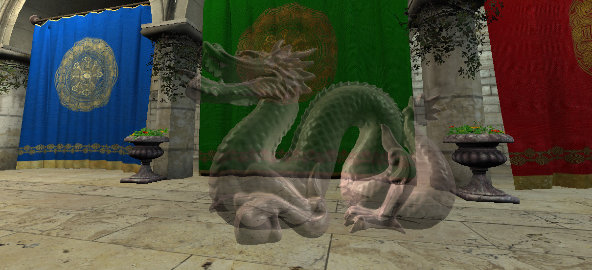
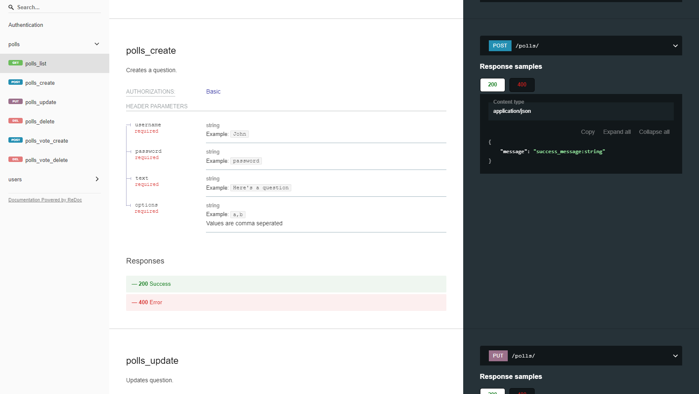
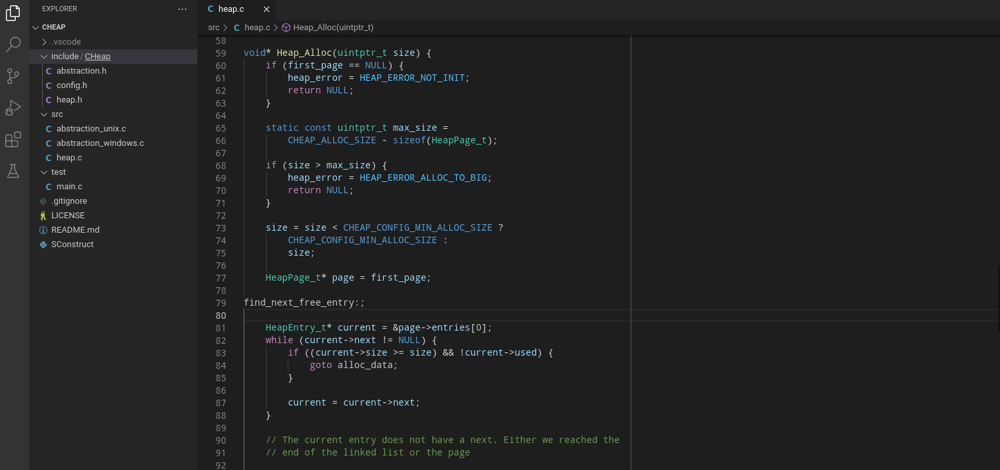

OpenGL OIT
Using C++ and modern OpenGL, I wrote a demo exploring a different approach to rendering transparent objects to reduce CPU overhead.
Traditional transparency approaches require additional CPU computation to sort objects, where this demo moves the computation to the GPU.
Click to view the source
Godot AMD FidelityFX Super Resolution
Using C++, I implemented AMD's FidelityFX Super Resolution in Godot for it's upcoming 4.0 release
Click to view the source
Emulator 6502
Using C, I wrote an emulator for the 6502 CPU.
It is designed to be extremely customizable in how it's connected to different devices using memory mapping.
Click to view the source


DJango
Using Python, Django, and Docker, I explored CRUD and REST principles.
In this demo, users can post and vote on polls using a SQL based database. Django is then ran within a docker container.
Click to view the source
